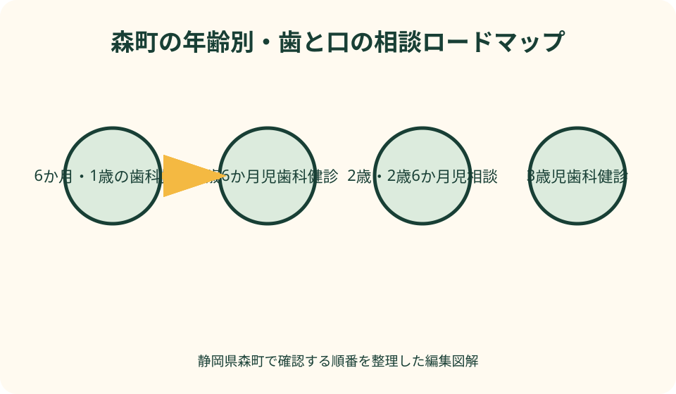
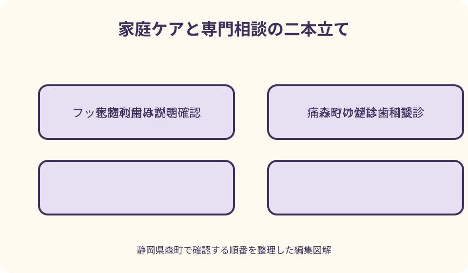

妊娠・子育て手続｜最終確認 2026-08-10
静岡県森町の幼児歯科健診｜年齢別の日程・持ち物とフッ化物利用
静岡県森町では、乳幼児期の節目ごとに歯科健診や歯科指導が組み込まれています。1歳児相談は歯みがき指導、1歳6か月児と3歳児の健康診査は歯科健診・歯科指導・フッ素塗布、2歳児と2歳6か月児の相談は歯科指導・フッ素塗布という違いがあります。年齢だけで日を推測せず、町からの案内と当年度の保健ガイドを照合することが出発点です。

編集イラスト静岡県森町の幼児歯科健診を年齢から探す
最初に、子どもの生年月日と現在の月齢・年齢を確認します。森町の乳幼児健診・相談は、同じ『歯の相談』でも1歳児相談、1歳6か月児健康診査、2歳児相談、2歳6か月児相談、3歳児健康診査で内容が異なります。きょうだいの過去年程をそのまま当てはめないことが大切です。
次に、森町公式の『乳幼児の健診・相談』と当年度の『森町こども保健ガイド』を照合します。公式ページは日程を保健ガイドで確認するよう案内しているため、年齢だけで参加日を決めず、対象となる誕生月、受付時間、会場を最新版で確かめます。
町から届いた通知や健診・相談つづりがある家庭は、ウェブの日程と並べて見ます。個別通知に書かれた時刻がある場合や日程変更の連絡があった場合は、一般ページより自分宛ての最新案内を優先し、不一致は健康こども課こども家庭係へ確認します。
この記事の確認日は2026年8月10日です。日程、対象となる誕生月、受付方法、持ち物は年度により変わり得ます。受診前には森町公式ページを開き直し、保存した前年のPDFや家族の記憶だけで判断しないでください。
1歳までに口の様子と家庭ケアを相談する
乳歯の生え方には個人差があるため、同じ月齢の子どもと本数だけを比べて結論を出す必要はありません。歯が生え始めた時期、食べ方、口に触れることへの反応、家庭で困っている場面をメモし、健診や健康相談の機会に伝えます。
森町の6か月児相談には歯科指導が含まれています。離乳食や発育の相談と一緒に実施されるため、口の清掃だけでなく、食事中の様子や保護者の困りごとを整理しておくと、短い時間でも具体的な相談につながります。
1歳児相談では、身体計測、歯科指導、栄養指導、保健指導が行われ、町公式ページは歯みがき指導を明記しています。持ち物には母子健康手帳、アンケート、歯科問診票、歯ブラシ、口拭きタオル、子どもノートが示されています。
相談当日は、家庭で普段使っている歯ブラシを持参すると、持ち方や動かし方を具体的に聞きやすくなります。ただし、歯ぐきからの出血、痛み、転倒によるけがなどがある場合は、相談日まで待つかを家庭で決めず、歯科医療機関へ連絡してください。
1歳6か月児健康診査の歯科項目
森町の1歳6か月児健康診査は、保健福祉センターで行う節目の健診です。町公式では、身体計測、内科健診、歯科健診、歯科指導とフッ素塗布、栄養指導、保健指導が内容として示されています。歯だけでなく発育や生活全体を確認する機会です。
持ち物は、母子健康手帳、歯科問診票、アンケート、歯ブラシ、口拭きタオル、バスタオル、子どもノートです。問診票は当日の待ち時間に急いで書かず、普段の歯みがき回数、間食、飲み物、気になる歯の場所などを家族で確認して記入します。
歯科健診は、その時点の歯と口の状態を専門職が確認する場です。結果を『問題なし』『むし歯あり』という一言だけで保管せず、受診勧奨の有無、家庭で続けること、次に確認する時期を母子健康手帳や子どもノートへ残します。
人見知りや口を開けることへの不安が強い子どもは、事前に健康こども課へ相談できます。当日にできなかった検査や指導がある場合の次の対応も、その場で確認します。無理に家庭で口を押さえて練習するのではなく、安心できる説明方法を相談してください。
2歳児・2歳6か月児相談の違い
森町の2歳児相談は、身体計測、歯科指導とフッ素塗布、保健指導で構成されています。持ち物には母子健康手帳、アンケート、歯科問診票、歯ブラシ、口拭きタオル、子どもノートが挙げられています。対象日を保健ガイドで確認して準備します。
2歳6か月児相談は、身体計測、歯科指導とフッ素塗布に加え、栄養指導と保健指導が案内されています。2歳児相談と名称が似ていますが、開催日や質問内容は同じとは限りません。届いた案内を子どもの生年月日と照合します。
この時期は、自分でみがきたがる一方、仕上げみがきを嫌がるなど家庭ごとの困りごとが出やすくなります。『できていない』とだけ伝えるより、いつ、どこで、どの姿勢なら受け入れやすいか、拒否が強くなる場面は何かを書いて相談します。
フッ素塗布が案内されていても、当日の体調、過去の経験、保護者の疑問があれば事前に伝えます。塗布を受けるかどうかを記事だけで決めず、方法、注意事項、希望しない場合の健診参加方法を健康こども課へ確認します。
3歳児健康診査で確認すること
3歳児健康診査は、森町公式が幼児期最後の健診と位置づける節目の機会です。身体計測、内科健診、歯科健診、歯科指導とフッ素塗布、栄養指導、保健指導に加え、尿検査、視力検査、聴力検査が案内されています。
歯科関係の持ち物は、母子健康手帳、歯科問診票、歯ブラシ、口拭きタオルなどです。3歳児健診では採尿容器も事前に郵送されると案内されているため、歯科用の準備だけで満足せず、アンケートや検査用品を含む全体の持ち物を確認します。
食べ方、発音、口を開けたままになること、指しゃぶりなど、歯以外に見える困りごとも問診へ書いて構いません。原因や治療の要否を家庭で決めず、健診で相談し、必要に応じて歯科医療機関など適切な相談先を案内してもらいます。
3歳児健診を終えた後も、歯と口の確認が終わるわけではありません。結果に応じた受診、日常の歯みがき、定期的な歯科確認をどう続けるかを家族で決めます。就園先の健診とは目的や実施者が異なるため、結果を混同せず記録します。
歯科健診と歯科医院の診療を分ける
乳幼児健診の歯科項目は、決められた時期に歯や口の状態を確認し、保健指導へつなぐ機会です。一方、痛みや腫れ、歯の欠け、出血、食べにくさなど具体的な症状への診断や処置は、歯科医療機関へ相談する領域です。
健診日が近いからといって、症状のある子どもがその日まで待ってよいとは限りません。いつから、どの場所に、どんな変化があり、食事や睡眠へ影響しているかを整理して歯科医療機関へ伝え、受診時期の指示を受けます。
反対に、家庭で見た限り問題がなくても、対象の健診を省略してよいとは決められません。森町の案内に沿って参加し、専門職が見る機会として活用します。欠席の可能性がある場合は、先に町へ振替や別の確認方法を尋ねます。
健診結果で受診を勧められたら、紹介先の指定、期限、持参する結果票の有無を確かめます。『要受診』の意味や緊急度は結果ごとに異なるため、家族の解釈だけで急ぐ・待つを決めず、その場で質問します。
フッ化物利用は説明を受けて選ぶ
森町は、1歳6か月児と3歳児の健康診査、2歳児と2歳6か月児の相談でフッ素塗布を行うと案内しています。フッ化物の利用は歯科健診そのものとは別の行為として捉え、方法や目的、当日の流れを理解してから判断します。
厚生労働省の情報では、フッ化物歯面塗布は歯科医師や歯科衛生士が比較的高濃度の製剤を歯面へ塗布する方法です。家庭で使うフッ化物配合歯磨剤とは濃度や扱いが異なるため、町の塗布と日常の歯みがきを同じものとして考えません。
保護者が塗布を希望する場合も、希望しない場合も、当日の受付で初めて伝えるより事前に健康こども課へ相談すると流れを確認できます。健診への参加と塗布の扱い、同意確認、塗布後の注意は町の最新案内を優先します。
以前に塗布した経験、歯科医院でのフッ化物利用、家庭で使う歯磨剤について質問がある場合は、製品名や実施日をメモします。それらを基に個別の適否を家庭で断定せず、健診担当者またはかかりつけ歯科医へ相談してください。
家庭で使うフッ化物配合歯磨剤
家庭用のフッ化物配合歯磨剤は、専門職が行う歯面塗布とは使い方が違います。厚生労働省の情報を参考にしつつ、子どもの年齢に合う濃度や量、すすぎ方を歯科医師や歯科衛生士へ確認し、成人用の使い方をそのまま当てはめません。
製品を選ぶときは、パッケージの対象年齢、フッ化物濃度、使用量の表示を確認します。味や泡立ちだけで選ばず、子どもが吐き出せるか、保護者が量を管理できるかも相談材料にします。誤飲を避けるため、保管は子どもの手が届かない場所にします。
歯磨剤を使えば、みがき残しや食習慣を考えなくてよいわけではありません。歯ブラシが届きにくい場所、間食や飲み物の時間、仕上げみがきが難しい場面を一緒に見直し、家庭で継続できる方法を健診で尋ねます。
口内炎、歯ぐきの傷、治療中の歯がある場合など、普段と違う状態で使ってよいか迷うときは、自己判断で量を増減したり別製品へ替えたりせず歯科医療機関へ確認します。使用後の異変も製品名と使用量を添えて相談します。

家庭の歯みがきを記録する
家庭ケアの記録は、完璧にできた日を数えるためではありません。朝と夜のどちらが難しいか、子どもが嫌がる姿勢、保護者が見えにくい場所、歯ブラシを交換した日など、相談時に状況を再現できる情報を短く残します。
仕上げみがきは、家族全員が同じやり方を再現できるよう、健診で教わった姿勢や声かけを共有します。口を無理に長く開けさせるのではなく、短時間で区切る方法など、子どもと家庭に合う工夫を専門職へ相談します。
食事の記録は、糖分の量を独自に計算するより、食べた時刻、回数、飲み物、寝る前の摂取を数日だけ記録すると伝わりやすくなります。栄養指導が含まれる相談では、歯みがきだけでなく生活リズムと合わせて聞けます。
子ども自身がみがく時間は習慣づくりとして大切ですが、できばえを叱る材料にはしません。保護者が確認する範囲や仕上げみがきを続ける時期は、発達や口の状態に応じて歯科専門職へ尋ねます。
歯科問診票を具体的に書く
森町は、乳幼児の健診・相談にあたり、健診・相談つづり内の育ちのアンケートと歯科問診票へ記入するよう案内しています。用紙が見当たらない場合は、別の紙で代用できると決めず、健康こども課へ再交付や当日の対応を確認します。
問診票には、現在の歯の本数を正確に数えられなくても、気になる位置や変化を図へ印で示せます。いつから気になるか、痛がる様子、食事への影響、過去の歯科受診を記し、診断名を自分で付けないようにします。
歯みがきの回数だけでなく、子どもが自分でみがく時間と保護者の仕上げを分けて書きます。フッ化物配合歯磨剤を使っている場合は、製品名や表示濃度が分かる写真を用意すると、口頭の記憶より相談しやすくなります。
記入内容を家族が代筆した場合は、普段ケアしている人の観察と異なる点がないか確認します。日中の保育状況や間食が分からなければ推測で埋めず、『園へ確認中』など未確認であることを示します。
当日の持ち物と服装
共通して持参する中心資料は母子健康手帳です。年齢に応じ、アンケート、歯科問診票、歯ブラシ、口拭きタオル、バスタオル、子どもノートが加わります。3歳児健康診査では尿検査用品など歯科以外の準備もあります。
持ち物は前夜に子ども別の袋へ入れ、問診票に氏名があるか確かめます。きょうだいを同伴する家庭は、健診対象の子どもの歯ブラシと普段用を混ぜないよう印を付けます。飲食物や着替えが必要かも当年度案内で確認します。
口元やお腹を確認する場面に備え、着脱しやすい服装を選びます。ただし会場で求められる服装を記事から決めず、個別案内に指定があれば従います。子どもが安心できる小さなおもちゃなどを持参できるかは町へ尋ねます。
当日に発熱、嘔吐、感染症を疑う症状などがある場合は、会場へ直接向かわず健康こども課へ連絡します。参加できるか、別日になるかを町の指示で決め、歯の痛みなど急ぐ症状は別途歯科医療機関へ相談します。
欠席・日程変更を早めに相談する
指定日に参加できないと分かったら、健康こども課こども家庭係へ早めに連絡します。別日へ振り替えられるか、次の開催を待つか、医療機関での確認が必要かは、年齢や健診の種類によって違う可能性があります。
欠席連絡では、子どもの氏名、生年月日、対象の健診・相談名、案内された日、参加できない理由、連絡のつく時間を伝えます。単に『歯科健診を休む』では、1歳6か月児健診か2歳児相談か分からないため正式名称を読み上げます。
仕事や送迎の都合がある家庭は、受付開始と終了だけでなく、全体の所要時間や途中退出の扱いも事前に尋ねます。森町北部などから移動する場合は往復時間を見込み、無理な時間設定で当日欠席になるのを避けます。
連絡せず欠席した後でも、相談を諦める必要はありません。通知、母子健康手帳、対象日を手元に置いて町へ連絡し、現在利用できる方法を確認します。過去の対象日を過ぎていても同じ内容を必ず受けられるとは断定できません。
転入家庭が確認する書類と日程
森町へ転入した家庭は、子どもの生年月日、転入日、前住所地で受けた乳幼児健診・歯科健診、今後の予約を一覧にします。前自治体で同年齢の健診を受けていても、森町でどの案内が対象になるかを健康こども課へ確認します。
母子健康手帳の健診記録、前自治体の結果票、歯科医院の受診記録があれば持参できるようまとめます。記録がない場合は受けていないと決めず、受診時期と場所を思い出せる範囲で書き、照会が必要か相談します。
『森町乳幼児健診・相談つづり』や歯科問診票をまだ受け取っていない場合は、交付場所と受け取り方法を確認します。前住所地の問診票へ森町の内容を書き足すのではなく、現在使う様式を町から案内してもらいます。
転入直後に対象日が迫るときは、転入届の完了を待って連絡するか、先に相談できるかを町へ尋ねます。通知が届くまで自動的に待つのではなく、生年月日と転入日を伝え、案内の発送予定も確認します。
痛み・腫れ・けがは健診を待たない
子どもが歯や口を痛がる、顔や歯ぐきが腫れる、出血が続く、転んで歯を打ったなどの変化がある場合、集団の健診・相談は治療の代わりではありません。症状と発生時刻を整理し、歯科医療機関へ連絡して受診時期を確認します。
転倒や衝突では、どこを打ったか、歯の位置が変わったように見えるか、出血、意識や全身状態の変化を伝えます。写真を撮るために対応を遅らせず、緊急性が判断できない場合は医療機関や救急相談へ連絡します。
夜間や休日に症状が出たときは、通常の町健診窓口ではなく、その時間帯に利用できる医療相談先を確認します。呼吸が苦しい、意識の異常、大量の出血など生命に関わる可能性がある場合は、ためらわず119番を利用します。
症状が落ち着いたように見えても、受診不要とこの記事では判断できません。子どもの年齢、症状の経過、食事や睡眠への影響、外傷の有無を医療従事者へ伝え、家庭で観察する場合の注意点も確認します。
幼児歯科健診の良い点
良い点は、家庭では気づきにくい歯や口の状態を節目ごとに専門職へ相談できることです。森町の1歳6か月児・3歳児健診では歯科健診と指導が、1歳・2歳・2歳6か月児相談では年齢に応じた歯科指導が組み込まれています。
歯の確認と栄養・発育の相談が同じ機会にあるため、歯みがきだけを孤立した課題にせず、食事や生活リズムと結びつけられます。困りごとを事前に問診票へ書けば、家族が説明し忘れやすい点も共有できます。
母子健康手帳と子どもノートへ結果を残すと、次回の相談や歯科医院で経過を伝えやすくなります。問題の有無だけでなく、教わったケア、次に確認する時期、受診勧奨を記録することが役立ちます。
定期的な案内があることで、痛みが出てから初めて口を見るのではなく、普段の歯みがきや食習慣を見直すきっかけになります。ただし健診を受ければ今後の病気を完全に防げるという意味ではなく、家庭ケアと必要時の受診を続けます。
森町の案内へ注文したい点
注文したい点は、年齢別の日程、歯科内容、持ち物、フッ素塗布の説明を一枚の比較表で見られると、転入家庭にも分かりやすいことです。現在も公式ページに詳しい情報はありますが、健診と相談の違いを横並びにすると準備漏れを減らせます。
フッ化物利用について、当日の説明、保護者の確認方法、希望しない場合の健診参加、塗布後の注意を事前に読める案内があると判断しやすくなります。家庭側は、疑問を抱えたまま欠席せず、健康こども課へ相談することが大切です。
欠席や転入時の扱いも、連絡先だけでなく『いつまでに・何を伝えるか』の例があると実用的です。特に対象月の直前に転入した家庭は通知を待つべきか迷うため、生年月日と転入日を伝える相談例が役立ちます。
健診後に歯科受診を勧められた家庭向けに、結果票の読み方と予約時に伝える事項が示されると次の行動へ移りやすくなります。町から医療判断を一律に示すのではなく、相談先と記録の渡し方を案内する形が望まれます。
受けられなかったときの代案・結論
代案・結論として、指定日に行けない場合は、まず欠席連絡と振替の可否を町へ確認します。別日の集団健診、個別の相談、歯科医療機関での確認が同じ条件で利用できるとは限らないため、年齢と健診名を伝えて選択肢を聞きます。
歯科問診票や子どもノートが見つからない場合は、未記入で直接会場へ向かう前に再交付や当日の記入方法を尋ねます。母子健康手帳を紛失しているときは、その再交付相談と過去の健診記録の照会を分けて進めます。
子どもが会場で口を開けられなかった場合も、保護者が自宅で無理に確認して結果を補いません。どこまで確認できたか、次にどの場で相談するかを担当者へ聞き、子どもに合う方法を一緒に考えます。
最終的には、生年月日から対象の健診・相談を特定し、当年度日程、持ち物、フッ化物利用の希望や疑問を事前確認することが基本です。症状がある場合は健診日程と切り離し、歯科医療機関へ相談してください。

図解案1：年齢別の歯と口の相談ロードマップ
一つ目の図解は、6か月、1歳、1歳6か月、2歳、2歳6か月、3歳を森町の茶畑を進む道のように配置します。各地点へ『歯科指導』『歯科健診』『栄養指導』『フッ素塗布』のアイコンを置き、内容の違いを一目で示します。
1歳6か月と3歳は歯科健診を含む節目として大きく描き、1歳は歯みがき指導、2歳と2歳6か月は歯科指導と塗布の相談機会として色分けします。個別日程は年度ガイドで確認する注記を中央へ置きます。
下段には、母子健康手帳、歯科問診票、歯ブラシ、口拭きタオル、子どもノートを並べ、年齢ごとに必要なものへ線を引きます。3歳児には尿検査など全体健診の持ち物も確認する印を添えます。
右端を二方向へ分け、日常の疑問は健康こども課、痛み・腫れ・けがは歯科医療機関へつなぎます。集団健診と症状への受診を混同しない、森町の家庭向けに固有化した図にします。
図解案2：家庭ケアと専門相談の二本立て
二つ目の図解は、左側を家庭ケア、右側を専門相談に分けます。家庭ケアには歯ブラシ、仕上げみがき、食事時刻、フッ化物配合歯磨剤の表示確認を置き、毎日の観察を短い記録へ残す流れを描きます。
専門相談側には、森町の健診・相談、歯科医院、緊急時の医療相談を三段に配置します。年齢別の定期機会、症状がある場合の受診、生命に関わる可能性がある場合の119番を、矢印の太さで区別します。
中央には母子健康手帳と歯科問診票を橋として置きます。家庭で見た事実を問診へ書き、専門職から受けた説明を家庭ケアへ戻す循環を示し、健診を一回限りの行事にしない構成です。
フッ素塗布と家庭用歯磨剤は別の箱で描き、同じ言葉でも利用方法が異なることを示します。保護者の疑問は事前相談へ向かう吹き出しを添え、利用を一律に強制・否定しない図解にします。
大石の視点：家族の生活に続く歯科健診
大石の視点では、幼児歯科健診を『指定日に連れて行けば完了』という一日の用事にしないことが大切です。会場で得た短い助言を、朝の支度、夕食、入浴、就寝という家庭の動線へどう組み込むかまで考えて初めて生活に残ります。
森町は町なかと北部・山間部で移動時間が異なります。小さな子どもを連れて保健福祉センターへ向かう家庭は、受付時刻だけでなく、昼寝、食事、きょうだいの送迎を含めて予定を組み、難しければ早めに町へ相談してください。
引っ越してきた家庭では、前自治体の結果票や問診票が段ボールに入ったままになりがちです。母子健康手帳と子どもの医療関係書類だけは手持ちで運び、転入日と次の対象年齢を一枚へ書くと、通知を待つ間にも相談できます。
歯みがきが思うように進まない日があっても、保護者の努力不足と決めつける必要はありません。できない場面を具体的に専門職へ伝え、家庭が続けられる小さな方法へ変えることが、読み応えのある情報より実際の暮らしには重要です。
家族で残す歯科記録
家族用の記録は、子どもの氏名、生年月日、対象の健診名、案内日、参加日を先頭にします。歯科問診票の控えを作る場合は個人情報として保存先を限定し、家族の共有チャットへ無期限に置かないようにします。
健診結果は、確認された事項、家庭への助言、歯科受診の案内、次の町相談の四欄に分けます。専門用語を自己流で言い換えず、結果票の表現を写し、分からない語は確認先と質問日を残します。
フッ化物利用は、町での塗布日、歯科医院での利用、家庭用歯磨剤を別行にします。利用した事実だけで今後の必要性を決めず、次回の健診や歯科受診で記録を提示して相談します。
写真で口の中を記録する場合は、子どもの負担を優先し、無理に口を開けさせません。写真だけで状態を診断せず、気になる変化があるときは発生日、痛み、食事への影響と一緒に医療機関へ伝えます。
一次情報を使う順番
最初に読むのは森町公式の乳幼児健診・相談ページです。問診票への記入、当年度保健ガイド、連絡先を確かめます。次に町の育児ページで、年齢別の内容と持ち物を確認し、自分の子どもの案内と一致するか見ます。
こども家庭庁の乳幼児健診情報は、1歳6か月児健診と3歳児健診の位置づけや、専門職が問診票・母子健康手帳を参考にする全体像を理解する資料です。森町固有の日程や持ち物は町公式へ戻ります。
厚生労働省の歯科口腔保健情報は、歯科健診やフッ化物利用の一般的な説明を確認する資料です。国の解説から子どもの具体的な処置を決めず、疑問点を町や歯科医療機関へ尋ねるために使います。
検索結果の要約や古いPDFだけを根拠にせず、URL、ページ名、更新日、閲覧日を一組で保存します。年度が変わったら日程表を差し替え、前年の案内は比較用として別フォルダーへ移します。
森町の相談先と伝え方
森町の乳幼児健診・相談に関する連絡先は、健康こども課こども家庭係です。公式ページには、森町保健福祉センター内、電話0538-86-6330と掲載されています。訪問前に受付日時と持ち物を確認します。
日程確認では、『子どもは2024年○月生まれで、森町から2歳児相談の案内を受けました。対象日と受付時間、必要な問診票を確認したいです』のように、生年月日、案内名、質問をまとめて伝えます。
フッ化物利用への質問は、『塗布の説明を事前に聞きたい』『歯科医院で最近利用した記録がある』『塗布を希望しない場合の健診参加方法を知りたい』と具体化します。利用の可否を電話担当者へ一方的に求めず、当日の確認手順を聞きます。
欠席連絡では、指定日、子どもの氏名、生年月日、健診名、連絡先を用意します。痛みなど症状の相談は町の日程変更と分け、歯科医療機関へ現在の状態を伝えてください。
まとめ：年齢・目的・相談先を分ける
森町の幼児歯科健診は、1歳児の歯みがき指導、1歳6か月児と3歳児の歯科健診、2歳児と2歳6か月児の歯科指導というように年齢別の役割があります。まず生年月日と当年度ガイドから対象日を確認します。
持参物は、母子健康手帳、歯科問診票、歯ブラシ、口拭きタオル、子どもノートなどです。年齢によりアンケート、バスタオル、尿検査用品などが加わるため、歯科用品だけを準備して終えないようにします。
フッ素塗布、家庭のフッ化物配合歯磨剤、歯科医院での処置は別々に考えます。保護者の希望や疑問は事前に伝え、個別の利用方法は専門職の説明を受けて判断します。
今日の一歩は、母子健康手帳と町の通知を並べ、対象の健診名、日程、未記入の問診票を確認することです。欠席・転入は健康こども課へ、痛み・腫れ・けがは健診を待たず歯科医療機関へ相談してください。
公式情報・確認先
掲載内容は次の一次情報を基礎に整理しました。営業、料金、催し、交通は変わるため、出発前または手続き前にリンク先で最新情報を確認してください。
- 乳幼児の健診・相談（静岡県森町、2026-08-10確認）
- 育児（静岡県森町、2026-08-10確認）
- 森町子育て応援サイト もりっこ（静岡県森町、2026-08-10確認）
- 乳幼児健診に関する取組み（こども家庭庁、2026-08-10確認）
- 歯科口腔保健関連情報（厚生労働省、2026-08-10確認）
- フッ化物配合歯磨剤（厚生労働省 e-ヘルスネット、2026-08-10確認）
- フッ化物歯面塗布（厚生労働省 e-ヘルスネット、2026-08-10確認）